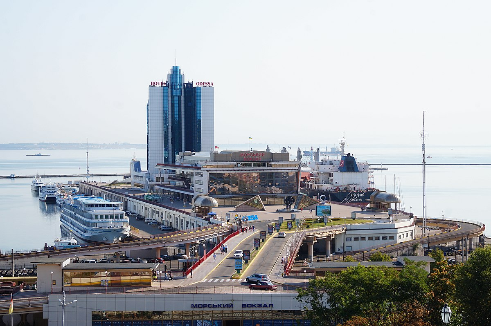

Дата народження: 21.11.2002 pік
Місце народження: Голосіївський район міста Києва
Освіта:
Ліцей "Голосіївський" №241 міста Києва - школа (середня освіта)
Національний технічний університет України «Київський політехнічний інститут
ім. Ігоря Сікорського» - університет (вища освіта)
Хобі:
Улюблені фільми:
Одеса — місто в Україні. Третє найбільше місто країни після Києва та Харкова. Розташоване на узбережжі Чорного моря. Найбільший морський торговий порт держави. Культурно-освітній, туристичний, торговий, транспортний центр держави.
